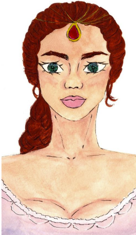
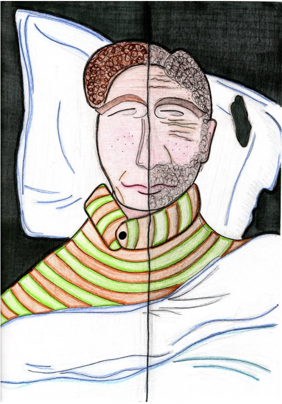

Ráno som sa zobudila a neverila som vlastným očiam. Nebola som ani v mojej posteli, ani v mojej izbe, ale v malej staromódnej izbičke. Väčšina nábytku bola vyrobená ručne z dreva. Myslela som si, že ešte stále spím, ale keď som sa udrela, bolelo to, čiže som mohla naisto vedieť, že nespím. Začala som panikáriť. Kto by sa neznepokojoval v takejto situácii? Moje zmätené myšlienky prerušilo otvorenie dverí. „Vstávaj, musíš ísť do školy!“ zakričala pani, ktorá vyzerala presne ako moja mama, ale oblečenie mala úplne iné. Hlavu jej zdobila biela šatka a na tele sa vynímal kroj. Pozrela som sa cez malé okienko vedľa postele. Vonku panovala obrovská tma, po slniečku nebolo ani chýru. Bola som zmätená, ale snažila som sa ju presvedčiť, aby som mohla ešte chvíľku zostať v posteli. „Vonku je ešte tma,“ namietla som. Chcela som získať čas, nech môžem pouvažovať, ako som sa sem dostala a ako sa vrátim späť do svojho starého dobrého života. „Nešpekuluj, vždy ťa budím takto. Musíšísť po vodu do studne. To je tvoja každodenná práca!“ zvýšila hlas a odišla z mojej izby. Výborne, z tohto sa už nevymocem.
Na ceste domov s dvoma plnými vedrami vody som rozmýšľala, čo sa deje, ale žiadne normálne vysvetlenie mi nenapadlo. Asi toto bude môj nový život a ja sa s tým budem musieť zmieriť. Slnko, ktoré sa pomaly objavovalo na slaboružovej oblohe, mi svietilo 12 priamo do očí a ja som si všimla, ako je vonku nádherne. Krásu okolia kazilo vedomie, že už asi nikdy neuvidím moje kamarátky, moju rodinu a mesto, v ktorom som tak rada žila. Hlavu hore, povedala som si, možno to nebude nakoniec také zlé.
Malú taštičku so školskými potrebami som si prehodila cez plecia a vyšla z domu. Škola predsa volá. Chvíľku som iba tak postávala pred domom, lebo som nevedela, ktorým smerom sa mám vydať. Nakoniec, ako na zavolanie, za mnou dobehlo dievča a silno ma objalo. „Ahoj, prečo si ma nečakala pred mojím domom ako vždy? Vystrašila si ma, keď si sa neukázala. Myslela som si, že sa ti ráno niečo stalo!“ povedala a pustila ma z jej pevného objatia. „Teraz poďme do školy, nemáme už čas na to, aby sme tu postávali. Nechcem zmeškať dnešnú vzácnu návštevu. Ja sa na ňu tak teším a som zvedavá, kto to bude!“ zvýskla s nadšením a už ma ťahala do školy. Škola bola od domčeka asi hodinu cesty. Našťastie som nemusela veľa rozprávať. Dievča vedľa mňa rozprávalo neprestajne celú cestu. Chcela som vedieť, ako sa volá, ale pripadalo mi zvláštne opýtať sa jej na meno.
Škola vyzerala veľmi útulne. Bola to drevená budova s dvomi poschodiami. Keď sme prišli do triedy, hneď som sa dozvedela meno dievčaťa, ktoré so mnou išlo do školy. „Ahoj, Anna!“ rozbehla sa k nej iná dievčinka s otvorenou náručou a na mňa iba zazrela. Anna jej objatie neopätovala a otočiac sa na mňa, zasa prehovorila „Ona si stále myslí, že sme kamarátky? Prisahám, ona je ako kliešť a ja sa jej nikdy nezbavím.“ Vzdychla si a sadla si do lavice. Všetci už boli v škole. Spoznala som to podľa tašiek pri laviciach. Sadla som si vedľa chlapca, ktorý ako jediný sedel sám. Keď sa hodina začala, chlapec ma potiahol za vlasy a začal sa mi smiať. Už od začiatku vyzeral veľmi drzo, ale toto by som od neho vôbec nečakala. Zrazu úsmev na jeho tvári zmizol. Keď som sa otočila, aby som zistila prečo, zostala som úplne v šoku.
„Takto sa správať k dievčatám? Nenaučili ťa tvoji ctení rodičia, ako sa máš správať k dámam?“ prehovorila prichádzajúca majestátna pani. Bola mi veľmi povedomá... jej podobizeň som už niekde videla... a zrazu mi došlo kde...v učebnici dejepisu! Bola to samotná Mária Terézia, o ktorej sme sa učili minulý týždeň v mojom normálnom živote!
Kráľovná škaredo zazerala na chlapca. Ten stratil reč a úplne skamenel. Na mňa sa láskavo pozrela a pohladkala ma po hlave. „Nesmieš nechať, aby ti niekto ubližoval,“ povedala nežným hlasom a podišla pred tabuľu. Všetci boli ticho, keď nám ju pani učiteľka predstavovala. „Prišla som sem, aby som vám odpovedala na otázky a porozprávala, aké je to byť ženou na tróne, “ povedala s úsmevom a sadla si. Celé dve vyučovacie hodiny sa jej žiaci pýtali, aké je to rozhodovať o všetkom v takej veľkej krajine, prečo sa rozhodla zaviesť povinnú školskú dochádzku. Máriu Teréziu som obdivovala už vtedy, keď nám o nej prednášala pani učiteľka. Viem, je to trochu nezvyčajné, aby niekto v mojom veku obdivoval postavu z histórie, ale ja som proste 13 taká. Mária Terézia bola odvážna a múdra žena, ktorá sa úprimne zaujímala o dobro svojej krajiny. Ukázala, že aj ženy sú silné a dokážu rozhodovať o dobre krajiny, niekedy lepšie ako muži. Jej reformy zmenili veľa ľudom pohľad na svet a možno keby to neurobila ona, tak nikto. Veľa detí sa vďaka škole naučilo potrebné veci, ktoré v živote využili.
Počúvajúc odpovede Márie Terézie, som zrazu prišla na to, kde som. Zistila som, že som cestovala v čase a som v minulosti. Samozrejme, nie je to logické vysvetlenie, ale napadá vám niečo lepšie? Nevedela som prečo som tu a ani to, ako sa dostanem späť, ale teraz som bola rada, že som ju mohla vidieť a dozvedieť sa, prečo niektoré veci urobila a čo oľutovala. Na všetky otázky, ktoré som jej chcela tie roky položiť, mi odpovedala a ja som konečne, zistila prečo to všetko robila.
Zvyšok dna prebehol rýchlo. Odvtedy, ako Mária Terézia zahriakla môjho suseda, sa ma ani nedotkol. Všimla som si, ako na mňa zazeral, ale úprimne mi to bolo jedno. Sem-tam si chlapec niečo povedal, ale to iba sám pre seba. Keď som s Annou vychádzala zo školy, uvidela som Máriu Teréziu, ako sa chystá odísť do svojho paláca. Keď si ma všimla, povedala niečo svojmu kočišovi, ktorý zosadol z koča. Kočiš pomohol zosadnúť Márii Terézii, ktorá sa rezko vybrala mojím smerom. Anna a ja sme boli celé bez seba. „Anna, zlatko, mohla by som ti nachvíľku odviesť tvoju kamarátku? Som si istá, že si odvážne dievča a cestu domov zvládneš aj bez nej,“ povedala, usmiala sa a chytila ma za rameno. Anna prikývla a odišla. Na rozlúčku nám ešte zamávala a pomaly sa mi strácala z dohľadu. Bola som nervózna, ale aj nadšená. „Vieš, keď sa na teba tak pozriem, vidím v tebe seba, keď som bola v tvojom veku. Ani ja som sa nikdy neobhajovala, keď mi niekto niečo robil. Vidím v tebe potenciál, a preto som si ťa obľúbila. Máš v sebe iskru,“ povedala, kým sme kráčali smerom k domu. Veľmi ma to potešilo. „Chceš počuť tajomstvo?“ opýtala sa so širokým úsmevom a naklonila sa k môjmu uchu, a pošepkala mi, ako sa stala takou sebavedomou ženou a ďalšie iné tajomstvá. Rada by som sa o ne s vami podelila, ale sľúbila som jej, že si ich nechám pre seba.
Keď som prišla do svojho nového domu, ako prvé som si ľahla na posteľ a od únavy som zaspala. A tak ako som sa dostala do minulosti, tak isto v spánku som sa dostala do svojej prítomnosti. Zobudila som sa vo svojej izbe v roku 2023. Bola som rada, že som späť, ale deň v habsburskej monarchii som si neskutočne užila a určite by som si ho zopakovala. Škoda, že som sa s týmto zážitkom nemohla podeliť s kamarátmi, ale som rada, že to môžem povedať aspoň vám. Dúfam, že cestovanie v čase ešte aspoň raz zažijem a stretnem ľudí, ktorí tvorili dejiny.
Tereza Putecová
He laughs and plays
His mother does the same
His father enjoys the family life
There are no worries
A toddler goes to sleep
He closes his eyes
He’ll open them tomorrow
He still laughs and plays
His friends do the same
His mother is cooking
His father enjoys the family life
But he has to go to work
A kid goes to sleep
He closes his eyes
He’ll open them tomorrow
He laughs and loves, with passion and
excitement
His girlfriend does the same
His mother is worried
His father is angry
A teen boy goes to sleep
He closes his eyes
He’ll open them tomorrow
He studies and works
His friends do the same
His mother’s too old
And so is his father
An adult goes to sleep
He closes his eyes
He’ll open them tomorrow
He says his wedding vows
His wife does the same
His mother is sad
His father is dead
An adult goes to sleep
He closes his eyes
He’ll open them tomorrow
He laughs and plays
His kid does the same
His wife is happy
His mother is dead
An adult goes to sleep
He closes his eyes
He’ll open them tomorrow
He signs the papers
His wife does the same
His kid is angry and sad
A divorced man goes to sleep
He closes his eyes
He’ll open them tomorrow
He sits and grieves
His kid is gone
An old man goes to sleep
He closes his eyes
He won’t open them tomorrow
Oliver Turok Heteš
When else are merry, will my Jekyll Hyde?
Or cringe with a demure, uneasy mien,
To menace that’s unreal, unfelt, unseen?
Or yield to moping missing meaning might
Belittle merit, turn it into blight.
So I shan’t lower my dear self-esteem.
Yet it’s of no importance what I deem
Right, for the moody mirror will decide
Oliver Turok Heteš